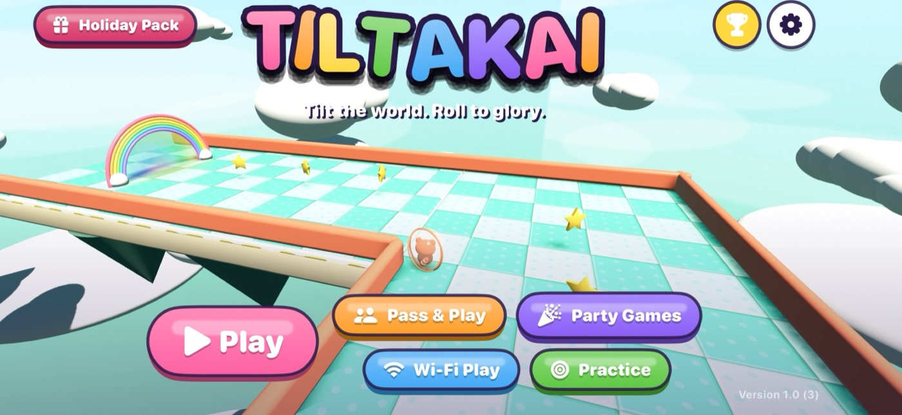
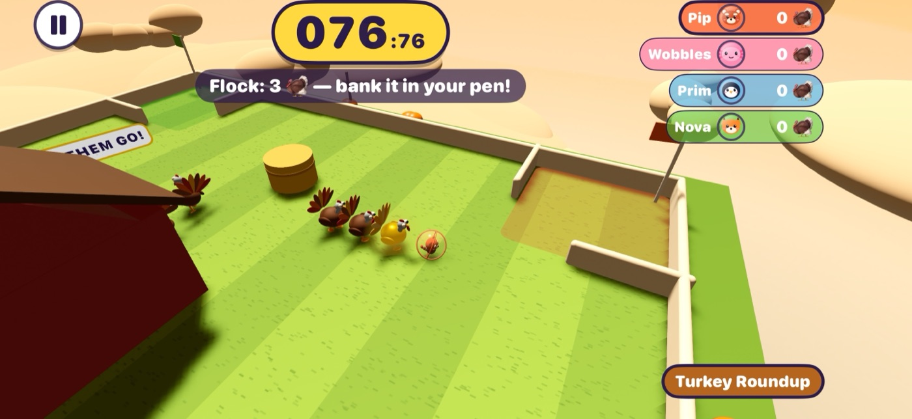
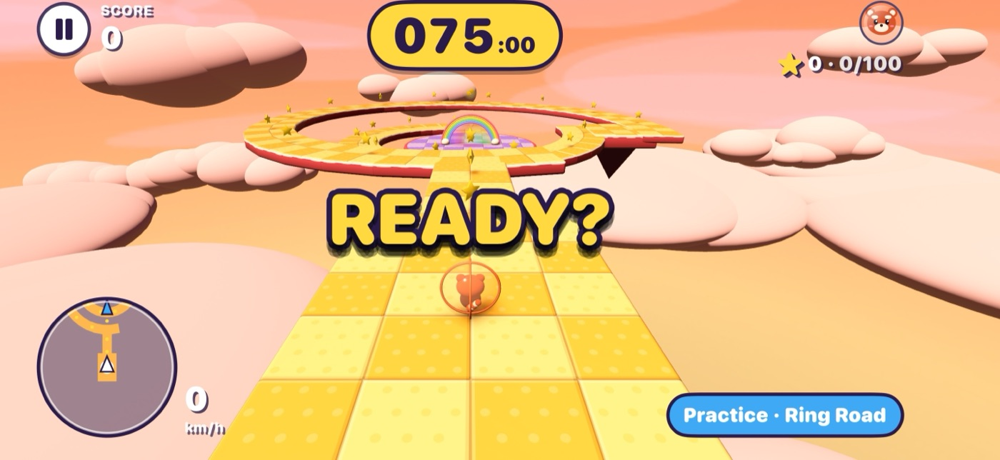
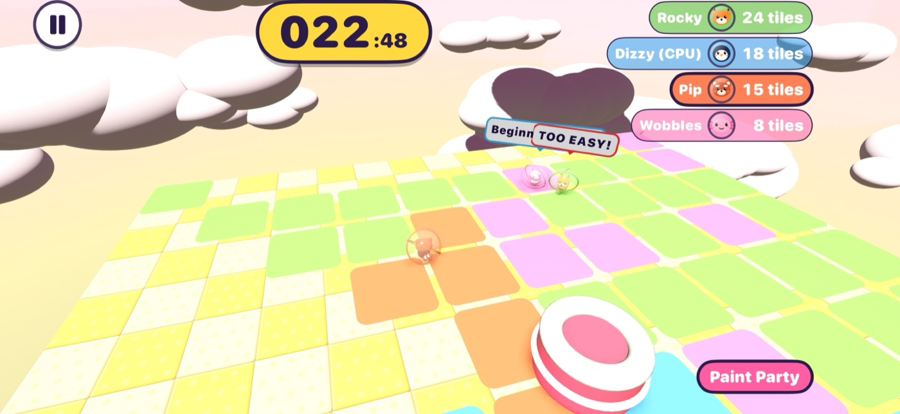

Tiltakai
Tilt the world. Roll to glory.
Tiltakai is a tilt-to-roll 3D platformer for iPhone. Tilt your phone to tilt a floating sky-island world and guide your critter's ball to the rainbow arch before time runs out. Play 60 floors across four tiers, take turns with family on one phone, or play 20 party games against CPU rivals or other phones on your home Wi-Fi.




Help
- How do I control my ball?
- Hold the phone in landscape at a comfortable angle. That angle counts as "flat" each time READY appears. Tilt away from you to roll forward. To re-level in the middle of a floor, open Pause and choose Re-level Phone. If you'd rather not tilt, switch to Touch Stick in Settings or the Pause menu.
- How do I turn the camera?
- Drag on the screen. In Touch Stick mode, drag on the left half (the stick is on the right). The camera returns to following your ball by itself.
- The ball feels too twitchy or too slow.
- Change the Tilt range in Settings. A smaller number is more sensitive and a larger one is more relaxed. You can also invert forward and back there.
- How does Wi-Fi play work?
- Every phone must be on the same Wi-Fi network with Tiltakai open. One phone hosts and the others join from the Wi-Fi Play screen. If no hosts appear, check that Tiltakai is allowed under Settings › Privacy & Security › Local Network on each phone. All phones need the same version of Tiltakai.
- Which version do I have?
- The version and build number are in the bottom-right corner of the title screen and at the bottom of the Settings screen.
- Do I need an account or an internet connection?
- No. There are no accounts, ads or in-app purchases, and the whole game works offline. Wi-Fi play uses only your local network.
Contact
Found a bug or have an idea? Email tiltakai@brentferree.com. Please include your version number (shown on the title screen) and what you were doing when the problem happened.